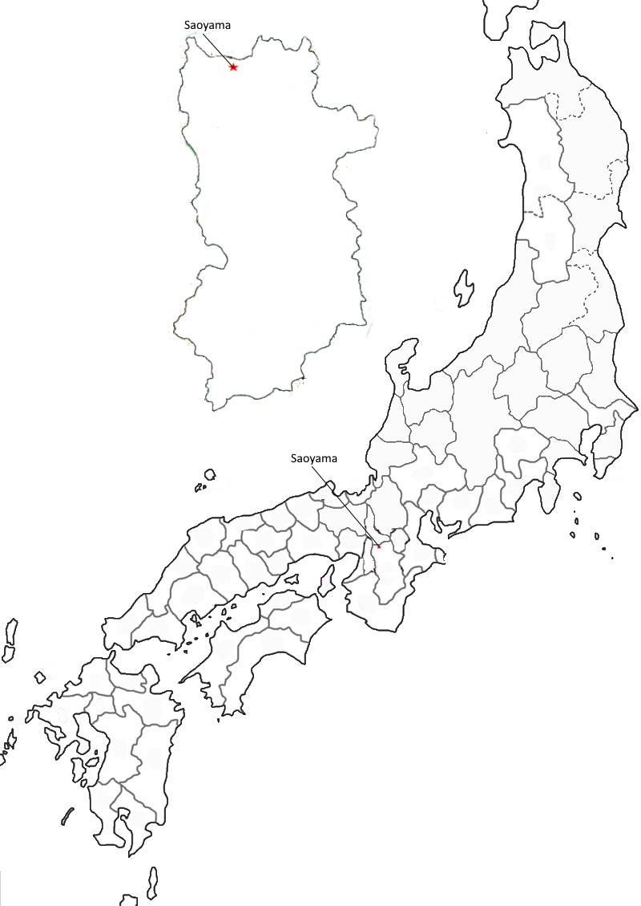

Poem #265 
たがための錦なればか秋ぎりのさほの山辺をたちかくすらむ
ta ga tame no
nishiki nareba ka
akigiri no
sao no yamabe o
tachikakusuramu
nishiki nareba ka
akigiri no
sao no yamabe o
tachikakusuramu
For what person's eyes
might it intend the brocade-
the autumnal mist
rising to conceal from us
the slopes of the Sao hills?
might it intend the brocade-
the autumnal mist
rising to conceal from us
the slopes of the Sao hills?
Poem #266
秋ぎりはけさはなたちそさほ山のははそのもみぢよそにても見む
akigiri wa
kesa wa na tachi so
saoyama no
hahaso no momiji
yoso nite mo mimu
kesa wa na tachi so
saoyama no
hahaso no momiji
yoso nite mo mimu
Just for this morning,
autumn mist, please stay away.
Even from afar,
I long to see the colors
on the Saoyama oaks
autumn mist, please stay away.
Even from afar,
I long to see the colors
on the Saoyama oaks
Poem #267
佐保山のははその色はうすけれど秋は深くもなりにけるかな
saoyama no
hahaso no iro wa
usukeredo
aki wa fukaku mo
narinikeru ka na
hahaso no iro wa
usukeredo
aki wa fukaku mo
narinikeru ka na
Pale are the colors
tinging the leaves of oak trees
in the Sao hills,
yet the autumnal season
has grown deeper and deeper,
tinging the leaves of oak trees
in the Sao hills,
yet the autumnal season
has grown deeper and deeper,
Poem #281
佐保山のははそのもみぢちりぬべみよるさへ見よとてらす月影
saoyama no
hahaso no momiji
chirinubemi
yoru sae mi yo to
terasu tsukikage
hahaso no momiji
chirinubemi
yoru sae mi yo to
terasu tsukikage
"Gaze even at night,"
the shining moon tells us,
"on the colored leaves
of the Saoyama oaks,
for they are soon to scatter.
the shining moon tells us,
"on the colored leaves
of the Saoyama oaks,
for they are soon to scatter.

Background Information
Conjures thoughts of a mountain in autumn colors. This image of autumn in the mountain was further extended to include the Sao River as well (Kaori). Just as Tatsuta has their goddess, Tatsutahime (goddess of Autumn), Sao has Saohime (goddess of Spring). The poems here do not reflect the fact that Saohime is the goddess of Spring.